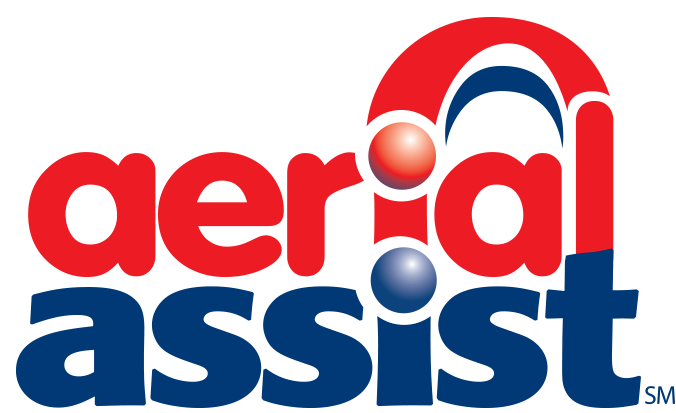

2014 Game: Aerial Assist
|  |
AERIAL ASSIST is played by two competing Alliances of three robots each on a flat 25’ x 54’ foot field, straddled by a truss suspended just over five feet above the floor. The objective is to score as many balls in goals as possible during a two (2)-minute and 30-second match. The more Alliances score their ball in their goals, and the more they work together to do it, the more points their Alliance receives.
The match begins with one 10-second Autonomous Period in which robots operate independently of driver. Each robot may begin with a ball and attempt to score it in a goal. Alliances earn bonus points for scoring balls in this mode and for any of their robots that move in to their zones. Additionally, each high/low pair of goals will be designated “hot” for five seconds, but the order of which side is first is randomized. For each ball scored in a “hot” goal, the Alliance earns additional bonus points.
For the rest of the match, drivers remotely control robots from behind a protective wall. Once all balls in autonomous are scored, only one ball is re-entered in to play, and the Alliances must cycle a single ball as many times as possible for the remainder of the match. With the single ball, they try to maximize their points earned by throwing balls over the truss, catching balls launched over the truss, and scoring in the high and low goals on the far side of the field.
Alliances receive large bonuses for “assists,” which are earned for each robot that has possession of the ball in a zone as the ball moves down the field.